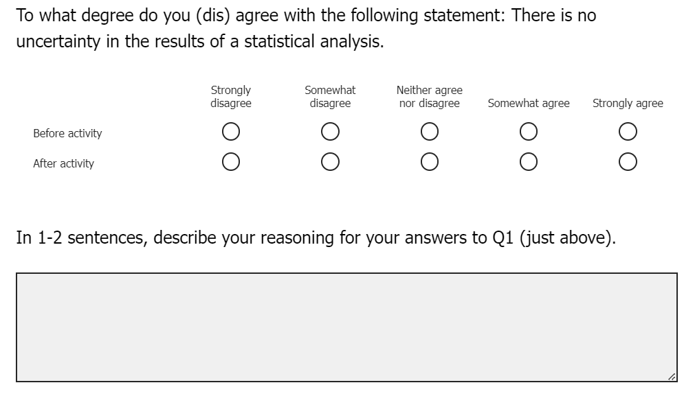

Surprise - They’re Different!
Comparing Frequentist and Bayesian Approaches in Public Policy
Stefani Langehennig, PhD ![]()
Zach del Rosario, PhD
Mine Dogucu, PhD
Implementing quantitative methodological techniques is a crucial piece of understanding public policy. While quasi-experimental, spatial (diffusion), and mixed methods are most commonly used when teaching policy studies, little research exists on using Bayesian approaches for policy learning, or how the outcomes from traditional quantitative approaches differ from a Bayesian approach. We propose an applied learning activity for students of public policy that exposes them to Bayesian methods and explores the differences between this statistical paradigm and more commonly used approaches. We do this using a structured interrogation of the The Climate and Economic Justice Screening Tool (CEJST) and the epistemological framings in the 5E model (Elby and Hammer 2010). The activity illustrates the importance of statistical assumptions, and by extension, the impact that different quantitative methods have on understanding public policy. The goal of the study is to introduce students, instructors, and practitioners of public policy to a new way of using statistics, equipping them with the tool set and logical processes necessary to apply either approach as they see fit when studying public policy.
1 Introduction
Social scientists routinely make use of quantitative methods to understand the complex world around them. Approaches employed range from quasi-experimental, spatial (diffusion), and econometric techniques, to methods that are more qualitative in nature. While Bayesian approaches are not completely missing from public policy and related fields (see Gill and Witko (2013); Fienberg (2011)), they are underutilized for policy learning among academics and policy specialists.
In this paper, we propose an applied learning activity for students of public policy - though its applications extend beyond this discipline - that exposes them to Bayesian methods. The activity explores the differences between Bayesian approaches and more commonly used statistical techniques to introduce students, instructors, and practitioners to new and different ways of using statistics to investigate real-world problems. Through the application of this activity, our hope is that using these methods will equip them with the tool set and logical processes necessary to apply different quantitative approaches as they see fit when studying public policy.
What follows is an in-depth examination of how teaching different quantitative methods results in a more robust understanding of public policy. We start by reviewing the research to date on cross-disciplinary approaches to using quantitative methods, as well as how this influences students’ assumptions about their own learning using the epistemological framings in the 5E Model (Elby and Hammer 2010). Next, we introduce our applied activity and describe its implementation in the classroom. We then discuss our findings from implementing the activity, followed by our conclusions from the study.
2 Background
Literature review here. High-level framing:
- What’s being/has been done in public policy education
- Cross-disciplinary approaches to quantitative methodology education
- Focus on social sciences
- Why it’s important/works
- Epistemological framings/5E Model
3 Applied Activity: Comparing Frequentist & Bayesian Approaches
We designed, implemented, and evaluated an activity that highlights the differences between Frequentist and Bayesian statistics. Our primary work included designing an activity that takes students through a structured interrogation of a dataset, with the pilot activity launching during spring of 2024. We evaluated this activity’s impact on students’ statistical knowledge and epistemological framings (Elby and Hammer 2010), discussed more below.
The activity is focused on a real dataset, discussed more below, to which groups of students are given guided statistical analysis. Students follow a structured process to analyze the dataset and interpret their results. However, different groups receive different versions of the activity: some receive a Frequentist approach, while the others receive a Bayesian approach. By carefully crafting the analyses to reach different conclusions, we aim to surprise students with diverging conclusions. The activity concludes with a final full-group discussion, where we highlight the importance of statistical assumptions, completing the comparison of Frequentist and Bayesian approaches.
The activity learning objectives are three-fold. First, students should be able to evaluate multiple hypotheses using inferential statistics; second, students should be able to connect their evaluation of hypotheses to real-world factors; and third, students should be able to state the primary statistical assumptions for Frequentist and Bayesian inference, and understand how they can lead to different conclusions. These learning objectives stem from our overall learning goal of engineering a “classroom controversy” to motivate students to find their own understanding of how Frequentist and Bayesian assumptions can lead to different conclusions (and by extension, real-world decisionmaking).
3.1 Activty Approach
Given our interest in teaching students new approaches to examining real-world public policy problems, we focus our activity on The Climate and Economic Justice Screening Tool (CEJST) that is the result of President Biden’s Executive Order issued in January 2021. The tool is used to identify and subsequently help communities disadvantaged by the burdens stemming from climate change in government social programs. While the data covers a number of burdens (health, transportation, and workforce development, for example), we focus on the sustainability aspects of the tool for our activity, including climate change, energy, and legacy pollution burdens on communities.
3.1.1 Problem Context
3.1.2 Activity Introduction
3.1.3 Activity Application
3.1.4 Activity Closing
3.2 Recruitment & Activity Materials
The activity is designed for use in a classroom for non-statistics majors. To pilot the activity among students before disseminating widely, we recruited from two distinct populations at our respective institutions. Students recruited from the University of Denver Daniels College of Business have various majors ranging from Business Information and Analytics to Marketing, while students recruited from Olin College of Engineering have focus on a variety of engineering-related topics.
For both institutions, participants had to be at least 18 years of age or older and must have completed at least one entry-level statistics course. At the University of Denver, all students enrolled in a business school major must complete three courses that are part of their statistics sequence (INFO 1010, 1020, and 2020). Students who were currently enrolled in the Winter 2024 quarter of INFO 1020 received a Canvas announcement about the opportunity to participate in a research study involving an applied activity about statistical inference outside of normal class hours. XX students volunteered to participate after receiving the Canvas announcement. These students met with Dr. Langehennig and completed the activity over the course of approximately 120 minutes and received pizza at the end of the activity.
[paragraph here on Olin recruitment]
Materials for the activity are openly available on our GitHub repository for instructors to use. Important starter documents include the run of show, which outlines at a high level the different steps of the activity, as well as the artifacts used in the activity. Further, the learning objectives and details of the activity are fleshed out in the introduction document. Finally, instructors can watch a video overview of the activity on YouTube as well.
4 Evaluation
In addition to exposing students to different statistical paradigms, we are interested in students’ awareness of Bayesian methods and their epistemological framings — their assumptions about the nature and accessibility of “truth” (Elby and Hammer 2010). Using pre- and post-pre-activity surveys, we measure students’ self-reported familiarity of fundamental Bayesian ideas. Specifically, we measure their attitudes before the activity, as well as their change in attitudes after the activity, with respect to ideas around statistical inference. The reason for using a post-pre design after the activity is straightforward. We want to capture changes in self-perceived attitudes about a topic by asking participants to consider where they think their beliefs were before the activity, followed by where they think they are now (see Hiebert and Magnusson (2014)). The participants give themselves two ratings to capture this before and after reflection, as shown below.

We used a similar format for each of the learning objectives outlined in Section 3. The survey includes the following questions with Likert responses ranging from “Strongly disagree” to “Strongly agree”:
- To what degree do you (dis) agree with the following statement: There is no uncertainty in the results of a statistical analysis.
- To what degree do you (dis) agree with the following statement: The results of a statistical analysis should not depend on the analyst’s assumptions.
- To what degree do you (dis) agree with the following statement: I know how to relate statistical analysis to things in the real world.
Each question that is associated with a learning objectives also gives students an open-ended opportunity to elaborate on their Likert responses. The survey ends by asking students the following open-ended question:
From the activity, what did you learn about the differences between Frequentist and Bayesian statistics? Please provide as much information as you can.
4.1 Results
5 Conclusion
[overview of findings from evaluation (surveys) here]
This activity bridges the gap between the common Frequentist approach oft taught in both undergraduate and graduate statistics classes and the Bayesian paradigm, to which many students have not been exposed. We do this using an applied approach, with an eye towards answering education research questions. While many teaching methods highlight the theoretical similarities and differences between frequentists and Bayesians, our activity moves beyond by grounding the comparison in a real-data application, as well as measuring the impact of applying both frameworks in the classroom. In doing so, we hope to introduce students to a new way of using statistics, equipping them with the tool set and logical processes necessary to apply either the frequentist or Bayesian (or both) approaches as they see fit.
Our activity uses an active learning approach, rather than passive lecture. Active learning has been shown to result in superior learning outcomes for students, particularly those from underrepresented groups (Freeman et al. 2014). In this way, our proposed activity will promote broader impacts of Bayesian thinking.
Our more speculative research goal—to promote more nuanced epistemological framings among students—has further potential impacts. Elby and Hammer (2010) argue that a “sophisticated” personal epistemology is actually achieved when one has access to multiple epistemological framings and can choose to switch between them based on what is productive for the context at hand. Students who can recognize and critique the assumptions underpinning their analyses (treating them as tentative), but carry out their analyses respecting those analyses (treating them as true) will likely be more effective as practicing statisticians. Getting students to recognize the importance of assumptions—and to practice adopting different assumptions—will be a critical first step in developing these multiple epistemological framings.